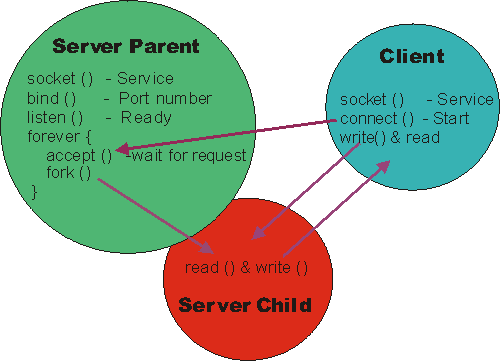

Have you ever wanted to run a tiny, safe Web server without worrying about using a fully blown Web server that could cause security issues? Do you wonder how to write a program that accepts incoming messages with a network socket? Have you ever just wanted your own Web server to experiment and learn with?
Well, look no further -- nweb is what you need. This is a simple Web server that has only 200 lines of C source code. It runs as a regular user and can't run any server-side scripts or programs, so it can't open up any special privileges or security holes.
This article covers:
- What the nweb server program offers
- Summary of C functions features in the program
- Pseudo code to aid understanding of the flow of the code
- Network socket system calls used and other system calls
- How the client side operates
- C source code
nweb only transmits the following types of files to the browser :
- Static Web pages with extensions .html or .htm
- Graphical images such as .gif, .png, .jgp, or .jpeg
- Compressed binary files and archives such as .zip, .gz, and .tar
If your favorite static file type is not in this list, you can simply add it in the source code and recompile to allow it.
The example file supplied includes the UNIX® source code in C and a precompiled one for AIX®. The source will compile with the IBM VisualAge® C compiler or the GNU C compiler, and should run unchanged on AIX, Linux®, or any other UNIX version.
On UNIX (assuming the compiler is in your path), enter:
cc –O nweb.c –o nweb |
On Linux, add an extra parameter:
gcc –O -DLINUX nweb.c –o nweb |
There are only a few functions in the source code, explained below.
-
log() - Logs messages to a log file. If the user requests an operation from the Web server that is not allowed or can't be completed, then nweb tries to inform the user directly. This is done by returning a fake Web page to the user that includes the error message. Since this function is only called from the child Web server process, the function can (once completed) exit and the main Web server process continues to allow further browser connection requests. If this is not a recoverable error, then the process is stopped.
-
web() - Deals with the HTTP browser request and returns the data to the browser. This function is called in a child process -- one for each Web request. It also allows the main Web server process to continue waiting for more connections. Checks are made to ensure the request is safe and can be completed. After the checks have been made, it transmits the requested static file to the browser and exits.
-
main() - This is the main Web server process function. After checking the command parameters, it creates a socket for incoming browser requests, sits in a loop accepting requests, and starts child processes to handle them. It should never end.
Listing 1 below is the pseudo code for the approximate 200 lines of source code. It should help you understand the flow of the program.
Listing 1. Pseudo code
log()
{
outputs error, sorry or log messages to the nweb.log file
if a sorry message, transmit it to the browser as a fake HTML response
if error or sorry message the program is stopped
}
web() - this function returns the request back to the browser
{
read from the socket the HTTP request
check it’s a simple GET command
check no parent directory requested to escape the web servers home directory
if no file name given assume index.html
check the file extension is valid and supported
check the file is readable by opening it
transmit the HTTP header to the browser
transmit the file contents to the browser
if LINUX sleep for one second to ensure the data arrives at the browser
stop
}
main()
{
if option is "-?", output the hints and stop
check the directory supplied is sensible and not a security risk
become a daemon process
ignore child programs (to avoid zombies when child processes stop)
create a socket, bind it to a port number and start listening to the socket
forever {
wait and accept incoming socket connection
fork a child process
if the child process then call the web function
else close new connection
}
}
|
In case you haven't come across these network socket system calls before, they are explained below -- particularly how they all fit together. You can also look them up in the manual or on the Web -- though it can be hard to see what they do and why they make up a Web server from just the source code and manual.
The socket(), bind(), listen(), and accept()
network system calls all work together to create a server process. They
set up a socket ready for use to communicate over a network when
combined. A socket is:
- An input and output stream -- regular pipes and files, for example.
- Remote access to or from a server -- when used over a network.
- Bidirectional -- when you read and write the same socket at both ends.
- Regular read and write functions -- used to send and receive data.
- A stream (no natural structure) -- you have to decide the protocol.
- For HTTP -- the request message and response message are finished with a carriage return (CR or /r in C code) and a line feed (LF and /n in C code). The URL is terminated by a space character and the end of the requested file is highlighted by closing the socket. There are more complex alternatives in HTTP and many optional features, but this is the simplest way to do it.
Figure 1 below explains how they fit together:
Figure 1.

The socket() function creates the socket and
returns the file descriptor, which can be used with any function that
uses file descriptors, such as read, write, and close. The arguments
tell the operating system what type of socket and communication you
need.
On the parameters to the socket() and bind(),
there are dozens of permutations and combinations. The arguments used
in the program are very typical for a regular general purpose socket
using IP; in my experience, other more complex options are rare.
The bind() function attaches a particular
port number to the socket. When a client is trying to contact your
server, it will use the IP address (often found by using a DNS service
to convert a hostname to an IP address) and the port number. The port
number tells the operating system which service you want on the server.
The details of the common port numbers on most UNIX machines are listed
in the /etc/services files. These files include standard port
numbers for services such as FTP (port 21), Telnet (port 23), and Web
servers (usually port 80). You should check the port numbers in the /etc/services
file to make sure you don't try one that is already in use. Although,
if you try, you should get an error message in the log file, as it is
normally impossible for two services to use the same port number.
The listen() function call tells the
operating system you are now ready to accept incoming requests. This is
the final switch that makes the socket available to local and remote
programs.
The accept() function does not return to your program until there is a socket connection request to this IP address and port number. The accept() function uses the file descriptor of the socket, but a new structure for the incoming connection (struct sockaddr_in) allows a server to check who is connecting to it. In nweb, you don't care who is connecting.
Once the accept() function returns, it means that the
client socket file descriptor is live. If you read bytes from the
socket, you get characters from the client, and if you write bytes to
the socket, they get transmitted to the client. But it is not typical to
read or write the socket from the main program. Normally, you want to
allow multiple clients to have access to the services of your server,
and if this main program does a read or write operation, it could block
until there are characters to be read or the written characters
transmitted. This main program should be running the accept()
function again to allow a new connection to start. The main program
should start a child process that does the "talking" to the client and
any work it needs performed. For the main program to close the socket,
rerun the accept function and await the next client connection. When the
child process is started, it inherits the parents open sockets in order
to keep the socket alive.
-
getenv() - A simple function for returning the shell variable values. If you set a Korn shell variable
$ export ABC=123, then the getenv("ABC") function would return a pointer to a null terminated string containing 123. -
chdir() - Changes directory.
-
fork() - Starts a child process. In the parent, it returns the process id (PID) of the child, and in the child, it returns zero.
-
setpgrp() - Sets the process group. The effect is for this process to break away from the other processes started by this user so it will not be affected by what happens to the users (like logging off).
-
signal() - Decides what happens when software interrupts arrive
for the process. Within the nweb.c code, the main server wants to
ignore the death of a child signal. Without this, the main server
process would have to run the wait system call for each child process,
or they would be forever stuck in the "zombie" state waiting for the
parent to call the
wait()function. Eventually, there would be too many zombie processes and the user's environment would hang, as they could not create further processes. -
open(), read(), write()andclose() - These are regular C library functions, but they are
used for reading the sockets and files sent to the client Web browsers
as the files and sockets are accessed by the file descriptor. The socket
is opened with the
accept()function; theopen()in the code is for opening the requested file.
Client-side socket system calls
The nweb.c code only shows you the server side of the socket. Listing 2 below illustrates the code that is required for the client side. Fortunately, the client side is much simpler, since you only need to supply the IP address and port number to make the connection to the server. In the code below, the servers IP address is assumed to be 192.168.0.42 and the server port is assumed to be 8181. In practice, hard coding these numbers in the code is not a good idea.
Listing 2. Client-side socket system calls
int sockfd;
static struct sockaddr_in serv_addr;
if((sockfd = socket(AF_INET, SOCK_STREAM,0)) <0)
pexit("Network socket system call");
serv_addr.sin_family = AF_INET;
serv_addr.sin_addr.s_addr = inet_addr("196.168.0.42");
serv_addr.sin_port = htons(8181);
if(connect(connectfd, (struct sockaddr *)&serv_addr, sizeof(serv_addr)) <0){
perror("Network connect system call");
exit(3);
/* now the sockfd can be used to communicate to the server */
/* with read() and write() */
|
Beware: the bind() and connect() functions take a structure as the argument that must be zero filled before setting particular options. In nweb.c,
the structure is made a static C variable to ensure it is zero filled
when the program is started. If this structure was on the stack as a
variable within the function or in the heap of the process, it could be
filled with old data and so its content will not be zero filled. In such
a case, you need to ensure it is zero filled; the bzero() function can be used to do this.
Listing 3. Example use on nweb
$ mkdir /home/nag/webpages $ cd /home/nag/webpages $ cp /tmp/nweb.tar . $ tar xvf nweb.tar $ ls client.c index.html nigel.jpg nweb.c nweb_AIX51 nweb_RedHat9_pentium nweb_SuSE_SLES8_PowerPC $ chmod ugo+x nweb $ chmod ugo+r *.html *.jpg $ nweb 8181 /home/nag/webpages & |
Start your browser and access: http:// 196.168.0.42:8181/index.html.
See Listing 4 for the server source code.
The download includes:
- nweb.c -- the source code
- client.c -- sample client end source code
- nweb executable files for:
- AIX 5.3
- SUSE SLES 9 Linux on PowerPC/ppc64
- Fedora 5 Linux for x86
- index.html -- test web page
- nigel.jpg -- test image fileDownload
| Description | Name | Size | Download method |
|---|---|---|---|
| nweb.c ,client.c, nweb executable files | es-nweb.zip | 36 KB | HTTP |
Information about download methods
Learn
- Want more? The developerWorks AIX zone hosts hundreds of informative articles and introductory, intermediate, and advanced tutorials.
- The IBM developerWorks team hosts hundreds of technical briefings around the world which you can attend at no charge.
- Check out
UNIX Network Programming
(W. Richard Stevens -- Prentice Hall) at Amazon.
Discuss
- Participate in the discussion forum.
-
developerWorks blogs: Get involved in
the developerWorks community.
Nigel Griffiths has 20+ years UNIX experience, now works in the IBM eServer Pre-Sales Technical Team in the United Kingdom and specializes in AIX and Linux performance, sizing, tools, benchmarks, and Oracle RDBMS. Nigel is well known in the AIX and Linux performance tuning area as the author of freely available tools like "nmon" for performance tuning and "ncp" for simple capacity monitoring/planning. Officially, Nigel has the title Consulting Member of the IT Specialist Profession but prefers the title Performance Guru!
Comments (Undergoing maintenance)
Table of contents
Tags
Popular article tags |
My article tagsSkip to tags list
Popular article tags |
My article tags